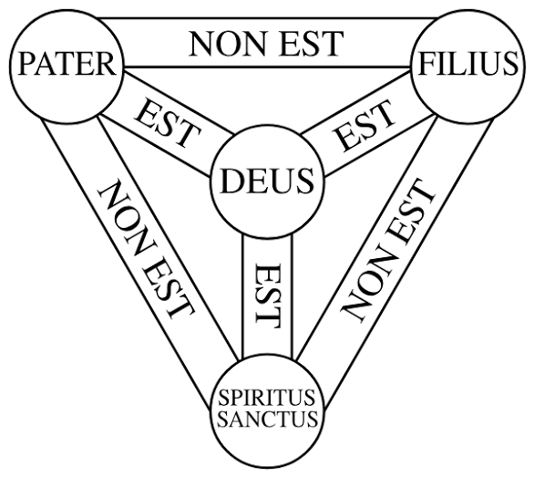

1. 구약의 신과 예수는 다르다.
그럼 지금껏 예수를 하느님으로 믿어온 우리는 뭐임? 우리가 지난 시간 동안 우상숭배를 저지르고 우상을 숭배하라 전도했다는 거임?
2. 구약의 신과 예수는 같다.
둘이 같다면 예수의 죽음과 부활은 무슨 의미가 있음? 신이 또라이새끼라서 그냥 인간들을 가지고 놀며 쇼한 거임?
이 이단의 이지선다에서 여러 논쟁 끝에 확립된 게 삼위일체론임
이게 논리적으로 옳냐 그르냐를 떠나서 이걸 부정하면 기독교는 존립할 수가 없음
사위일체 오위일체 십위일체 하면 다신교도 충분히 유일신교 가능